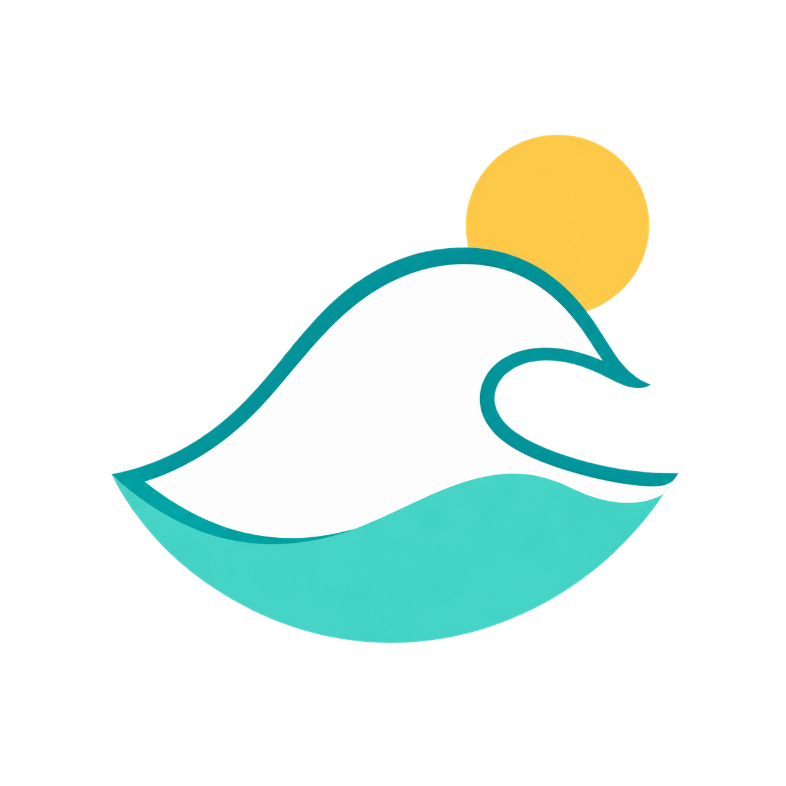

Favori
Aucune coordonnée à saisir : la recherche et la carte s’en chargent. Cartographie © OpenStreetMap.
Sélection de départ
Un appui suffit. Les réglages sont prudents pour ton mini-malibu et restent modifiables.
Retrouver tes favoris
Google ne propose pas de synchronisation directe des listes privées. Voici les deux méthodes simples et fiables.
Au fil de l’eau
Dans Google Maps, ouvre le spot, touche Partager, puis choisis Surf Radar.
Toute la liste
Exporte les données Saved / Enregistrés, décompresse l’archive, puis choisis ici le fichier CSV ou JSON.